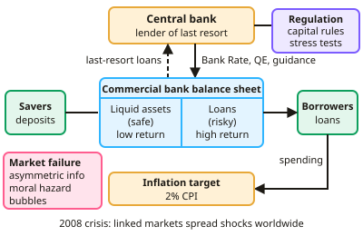

A-level Economics Year 13 · Topic 4
A global perspective
This topic looks at the global economy and the financial system that connects it.
We will cover globalisation and trade, commercial banks and credit creation, bonds and equity markets, and market failure in finance.
Then we look at central banks, financial regulation, and the tools, strengths and limits of monetary policy.
- 8 subtopics
- 382 questions
- Free: 4.1 notes and 6 questions
In this topic
- 4.1Financial markets and monetary policyFree below · 29 questions
- 4.2Globalisation, trade and developmentOpen in Full Marks · 57 questions
- 4.3Commercial banks, credit creation, liquidity and bank balance sheetsOpen in Full Marks · 36 questions
- 4.4Bond prices, bond yields and interest rates; equity and capital marketsOpen in Full Marks · 56 questions
- 4.5Market failure in financial markets: asymmetric information, moral hazard, speculation, bubbles, herding and market riggingOpen in Full Marks · 61 questions
- 4.6Central banks: lender of last resort and financial regulation (FPC, PRA, FCA, capital requirements)Open in Full Marks · 33 questions
- 4.7Monetary policy instruments and transmission mechanism: interest rates, quantitative easing, forward guidance and inflation targetingOpen in Full Marks · 44 questions
- 4.8Effectiveness and limitations of monetary policy: time lags, liquidity trap, central bank independence and exchange rate effectsOpen in Full Marks · 66 questions
4.1 · Free notes
Financial markets and monetary policy

Key points
- Financial markets facilitate saving, lending, risk management, speculation and the exchange of currencies and securities.
- Commercial banks' balance sheets balance liquidity against profitability; the central bank acts as lender of last resort and regulates the system.
- Monetary policy uses Bank Rate, quantitative easing and forward guidance to meet the inflation target.
- Market failure in financial markets includes asymmetric information, moral hazard, speculation and bubbles, and externalities from systemic risk.
- Financial regulation aims to reduce systemic risk through capital requirements, stress testing and oversight.
- The 2008 financial crisis illustrated how interconnected markets can transmit shocks globally.
In more detail
- Worked transmission: Bank Rate falls 1 point → mortgage rates fall → households have more to spend → AD rises → output and, later, inflation rise.
- What financial markets do: banks channel savings to borrowers, stock markets help firms raise capital, and insurance and derivatives markets help manage risk.
- The 2008 lesson: losses on US sub-prime mortgages spread around the world because banks held each other's debts, showing how connected financial markets are.
- Exam tip: always connect financial markets to the real economy: lending, investment, confidence and AD.
Practice
Financial markets and monetary policy: 6 questions
Pick an answer to check it, or open the answer for the explanation.
1. What is moral hazard in financial markets?
- Taking excessive risk because the consequences fall on others
- Perfect information
- A type of tax
- A lack of liquidity
Show answer
A: Taking excessive risk because the consequences fall on others. Bailout expectations can encourage risky behaviour.
2. What role does a central bank play as lender of last resort?
- It sets income tax
- It lends to banks facing liquidity crises to maintain stability
- It issues shares
- It sets wages
Show answer
B: It lends to banks facing liquidity crises to maintain stability. This helps prevent bank runs spreading.
3. What is asymmetric information?
- Everyone knows the same
- One party in a transaction has more or better information than the other
- No information exists
- Information is always accurate
Show answer
B: One party in a transaction has more or better information than the other. It can lead to adverse selection and market failure.
4. What is the purpose of capital requirements for banks?
- To increase lending without limit
- To ensure banks hold enough capital to absorb losses, reducing systemic risk
- To set interest rates
- To fix exchange rates
Show answer
B: To ensure banks hold enough capital to absorb losses, reducing systemic risk. They improve resilience during shocks.
5. What is forward guidance?
- Raising rates immediately
- Communicating likely future policy to influence expectations
- Buying foreign currency
- Setting a fixed exchange rate
Show answer
B: Communicating likely future policy to influence expectations. Clear signals can affect borrowing and investment decisions today.
6. What is systemic risk in financial markets?
- Risk to a single small firm
- The risk that the failure of one institution could trigger failures across the wider financial system
- A guaranteed profit
- A type of currency
Show answer
B: The risk that the failure of one institution could trigger failures across the wider financial system. This was a central concern during the 2008 financial crisis.
Keep going in Full Marks
Full Marks has 29 questions on Financial markets and monetary policy (23 more than here), set out in practice levels. You also get notes and 3D models for all 8 subtopics of A global perspective, plus games, timed exams and past papers.
On your exam board
- AQATopic 8: Financial markets and monetary policy, Topic 10: The international economy
- OCRTopic 2.4: The global context, Topic 2.5: The financial sector
- EdexcelTopic 4.1: International economics, Topic 4.4: The financial sector, Topic 4.5: Role of the state in the macroeconomy
- CambridgeTopic 9: The macroeconomy, Topic 10: Government macroeconomic intervention, Topic 11: International economic issues